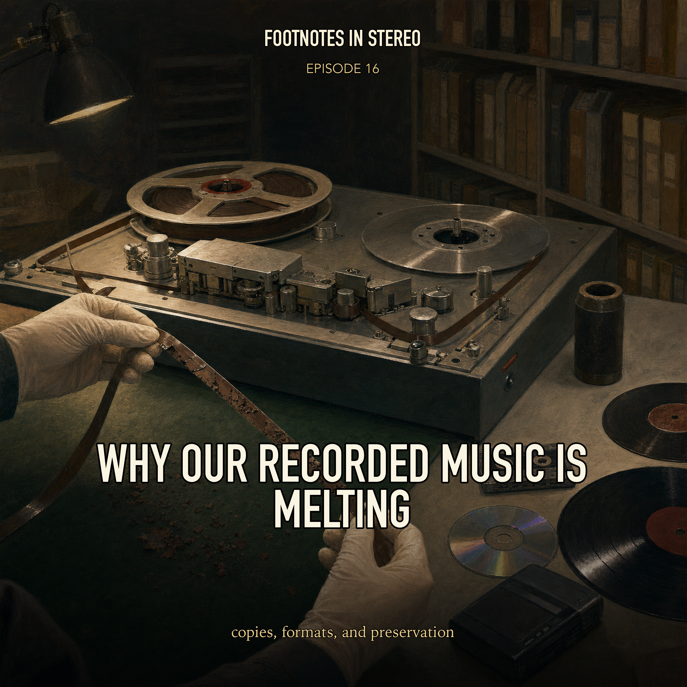

Episode 16 · Public episode
Why Our Recorded Music Is Melting
Music reproduction is a chain of copies: notation, mechanical instruments, cylinders, discs, tape, CDs, MP3 files, streaming libraries, rights systems, and preservation problems. Mira and Theo follow how each format changed who could hear music, who could sell it, who could copy it, and what survives when the medium decays. Created with Gemini Notebook. The conversation and voices in this episode were generated with Gemini Notebook.
Sources
- A Brief History of Music Publishing | Songtrust
- About This Program | National Recording Preservation Plan | Library of Congress
- Timeline | National Recording Preservation Plan | Library of Congress
- Historical Background | National Recording Preservation Plan | Library of Congress
- History of Recorded Sound | Center for Popular Music
- Preservation of Digitally Recorded Sound | CLIR
- RIAA Reports: US Recorded Music Annual Revenue Achieves New High of $11.5 Billion in 2025
Transcript
Machine transcript; lightly formatted and subject to correction.
Right now, sitting in this climate control vault down in Culpepper, Virginia, the master tapes to some of the greatest music ever recorded are quite literally turning into sticky goo. Yeah, it is a terrifying reality for archivists right now. I mean, we're talking about original multi-track recordings from the 70s and 80s. And if you take one of these priceless reels off the shelf and you try to run it through a tape machine, the magnetic material just flakes off. Right, the friction causes it to squeak and the tape literally destroys itself right before your eyes. You hit play and you permanently erase history. So welcome to this deep dive. For you listening, today we are going on a massive century spanning mission to trace the cut throat and fascinating evolution of the musical object. And that concept, the musical object, is really the anchor for everything we're going to unpack today. Because every single time the physical format of music changed, it triggered this massive domino effect. It changed everything, right? Completely. It rewired the economics of the entire industry, the legal rights of the creators, the very definition of a copy, and you know, ultimately even what we consider to be a song. To guide us through all of this, we are synthesizing a huge stack of source material. We've got detailed historical timelines straight from the Library of Congress and their National Recording Preservation Plan. Plus, we are pulling the latest 2025 industry revenue reports from the RIAA. Right. And we have these incredibly deep dives into the murky waters of copyright law from the publishing experts in song trust. And we are unpacking archival white papers from the Council on Library and Information Resources regarding that terrifying tape goo reality you just mentioned. It is a staggering amount of data. But the narrative two line is incredibly clear. The story of recorded sound is really the story of human ingenuity battling against the limitations of physics. And then inevitably battling against each other over who gets to monopolize the profits. Exactly. So we have to start our journey before playback even existed from roughly the 1470s up through the 1900s before we could magically trap the physical sound of a voice. The only way to mass produce music was to reproduce the instructions on how to play it. That is a fundamental paradigm to grasp. In this era, the musical object you purchased was not sound at all. Right. It was just paper. Purely intellectual property manifested as printed paper. If you bought music, you were buying a blueprint. According to the historical records from song trust, this starts around 1476. We have a Roman printer named Orican who prints a volume called the Missail Romatum. Which isn't exactly top 40 radio. No, no, not at all. Yeah. This volume contains plane shot or simple monophonic liturgical works. Basically, early church music. Right. And we have to consider the mechanics of printing at that time. Gutenberg's press had just revolutionized the printing of text. But music is vastly more complicated to print than words. Because you have so many moving parts, right? Exactly. You have staff lines, you have notes, you have clefs, and they all have to align perfectly. Orican managed it, but the process was so tedious. It often required multiple passes through the press one pass for the red staff lines, and then a totally separate pass for the black notes, which sounds incredibly inefficient. You'd have to line the paper up perfectly the second time, or the notes would be floating in space. It was a nightmare. But the real leap forward happens a bit later in the early 16th century with a Venetian printer named Otaviano Petrucci. Petrucci's the guy, right? He is widely considered the father of modern music printing. He perfected a multiple impression system that was just stunningly precise. The notes sat perfectly on the lines. But the technology isn't what makes Petrucci fascinating to me. It's his business model. Petrucci wasn't just a printer. He was a really shrewd cutthroat businessman. Oh, I have slowly. He actually secured a 20 year monopoly on music printing in the entire Republic of Venice. I look at Petrucci's 20 year printing monopoly, and I instantly compare it to like modern tech patents. It really is the exact same concept. The entire music business was driven by a walled garden profit monopoly from literally day one. You are exactly right. The profit motive has always been the primary engine. Venice was this massive hub of European commerce. So controlling the printing press there meant you controlled the flow of musical culture. And that monopoly inevitably leads us to the concept of ownership, which brings us to the birth of copyright law, because once you have a mass produced product, you have people trying to steal it. Right. Pirateed sheet music. Precisely. The language around copyright actually originated in England under King Henry VIII, who granted printers legal protections in the form of licenses. But it took a while to become an actual law, right? It did. It was formally codified much later in 1710 under the statute of Ann in England. This is widely considered the first full fledged copyright statute. It gave publishers and eventually authors the exclusive right to print their work for a set term of years. Okay. So now you have legal protection for the printed page. But this raises an important question. And it's something I've always wondered about this era. If the sheet music was the product, how did composers even track if a cafe across the country was playing their song? They couldn't. Right. Because if I write a song and print the sheet music, and some guy buys it and plays it every night in his tavern to entertain his paying customers, I'm not getting a cut of that tavern money. You weren't getting a single penny. And for centuries, composers just accepted that as the reality of the business. You sold the paper and that was the end of the transaction. That seems so unfair. It became a massive point of friction as public entertainment grew. The sources from song trust highlight a landmark moment across the English channel in France that really changed the world. By the mid 19th century, musical performances in music halls and cafes were taking on immense cultural and economic importance. But what actually happened to change the law? Well, in 1847, three French composers and writers, Paul Horion, Victor Perizzo, and Ernest Bourget, were sitting in a famous cafe in Paris called Les Ambustadors. Okay. They were just sitting there having drinks. And the house orchestra was playing music to entertain the patrons. And the music the orchestra was playing was written by those three men sitting right there in the audience. Yes. So when the bill came for their drinks, Bourget famously refused to pay it. That is amazing. He argued, essentially, you are using my music to attract customers and sell drinks. And you aren't paying me a dime. So I am not paying you for this coffee. That is incredibly bold. And I'm guessing the cafe owner didn't take that well. Not at all. He took them to court. But in 1851, the French courts actually sided with the composers. Really? Yeah. They ruled that the cafe was indeed exploiting the intellectual property of the writers for commercial gain without permission. That successful lawsuit led directly to the founding of Cess, a French society that became the very first performance pay source. Basically the first collection society. Exactly. It was the birth of the performance royalty. That is just brilliant. Suing a cafe is a scenario that is still entirely relevant to songwriters today, with performing rights organizations like AceCap or BMI, making sure bars and restaurants pay for licenses. It's the exact same battle. But even with these early legal protections, the economics for the actual creators were pretty brutal. I mean, by the first decade of the 20th century, the demand for sheet music in America had exploded. We are talking about roughly 25,000 popular songs being written and published every single year. It was an industrial scale of song writing. Think of Tin Pan Alley in New York. You had entire buildings just filled with pianos and writers churning out hits all day long. Sounds exhausting. It was. But the system heavily favored the publishers. For much of the 20th century, the situation for music creators was pretty bleak. Even though the landmark copyright act of 1909 in the US enshrined basic legal protections for composers, unscrupulous publishers often completely ignored the law. And the publishers held all the leverage because they controlled the printing presses. Exactly. And the distribution networks to get the sheet music into retail stores. So a songwriter desperate to get their music out there often had to sell their rights away for a single flat lump sum. So you write a massive hit and you get $50. You might write a song that sells a million copies of sheet music, but if you sell the copyright for 50 bucks, that's all you ever saw. That is brutal. It wasn't until much later, stretching into the 1970s that 50 50 co publishing deals became the standard where the writer and publisher actually split the revenue, which is much fairer. Yeah. And even that evolved over time to favor the songwriter more, leading to the 7,525 splits many traditional publishers use today. That's where the writer keeps 100% of the writer's share, plus half of the publisher's share. But all of this legal and economic architecture, the copyrights, the splits, the royalty collections, it was built entirely around a piece of paper. Right. And the limitation of sheet music is glaringly obvious. It requires the buyer to actually know how to play an instrument, or at least have a friend who can. You couldn't just enjoy the music passively. You had to do the work. Yeah. So the next massive leap in our timeline wasn't about printing better notes. It was about trapping the physical sound waves themselves. This is where the history of recording technology, as detailed by the Library of Congress, gets incredibly paradoxical. The ambition to capture sound goes back further than most people realize. Let's start in 1857 with a French inventor named Edward Leon Scott Demartin, though. Right. He invents a device called the phone autograph. And I love the mechanical absurdity of this thing. He traces sound waves onto soot-covered paper. It's brilliant in a very strange way. He essentially built an artificial ear. He used a horn to gather the sound, attach a vibrating membrane to the end of it, and fix to stiff pigs' bristle to the membrane. A pigs' bristle? Yeah, a pigs' bristle. He would hold a piece of paper over a smoking flame to collect a layer of black soot, wrap that paper around a hand-crank cylinder, and as he spoke into the horn, the bristle would scratch a visual representation of the sound waves into the soot. It is a beautiful piece of analog engineering, but here is the stunning historical irony that the Library of Congress timeline points out. Scott Demartinville was a printer and a proofreader. Okay, so he's a tech guy. Exactly. His primary interest was in stenography, the visual transcription of speech. His 1857 sit recordings, which were called phone autograms, were meant only as visual representations of sound. Wait, wait, so he never intended for them to be played back as audio? Never. He thought people would eventually learn to read the squiggles the exact same way we read text. That is wild. He didn't build a playback mechanism because he didn't think one was necessary, and honestly, they couldn't be played back by any analog means at the time anyway. The soot was way too delicate, which is just so frustrating to think about. He trapped the sound but threw away the key. It makes me wonder if a tree falls in the woods and gets drawn on soot, but literally no human being can hear it for 150 years, does it really count as the first recording? It's a fair philosophical point, and your timeline of 150 years is highly accurate. It wasn't until the year 2008 that scientists at the Lawrence Berkeley National Laboratory were finally able to hear what he recorded. Wow, 2008. So how did they do it? They used advanced optical scanning technology to take ultra high resolution photographs of the delicate soot paper. Then they wrote custom software that translated the visual amplitude of those scratched lines back into digital audio frequencies. So they essentially created a virtual digital stylus to trace a physical line drawn in 1857. Precisely. And when they finally played it back, they heard this ghostly sound of a person singing a French folk song, Eau Claire de la lune. That gives me chills. So technically the first true sound recordings date to 1857, but they were silent for a century and a half. This perfectly sets up why Thomas Edison gets the lion's share of the credit in the public consciousness. Because Edison actually builds something you could listen to. Right. 20 years later, in 1877, Edison invents a device that can play back what it records, the tin foil phonograph. And Edison's approach is entirely different. He was working on telephone transmitters and telegraph repeaters. He sketched a device that would physically indent sound impulses onto tin foil wrapped around a grooved metal cylinder. The mechanism is crucial here. Unlike the soot, which was just scratched away, Edison's stylus responded to the acoustic pressure of a voice by physically pushing down into the tin foil. Like making a dent. Exactly. Creating a groove with varying depths. This is called vertical recording or hill and dale recording. And crucially, his device had two needles, one for recording and a blunter one for playback. So he recorded himself shouting, Mary had a little lamb, moved the cylinder back to the starting position, engaged the playback needle and the indentations physically vibrated the needle. Which vibrated a diaphragm recreating the sound of his voice. Edison immediately foresaw the utility of this. He wasn't thinking about stenography at all. He knew it was an audio medium. By 1878, he's predicting this device will be used for music, for oral history, for talking books for the blind and for business dictation. He was remarkably prescient. But as a physical object, the tin foil format was an absolute nightmare. Oh, completely impractical. The tin foil tour easily. It could only be played a few times before the delicate indentations were completely smoothed out by the playback needle. So in 1886, scientists at the Volta laboratory, which was funded by Alexander Graham Bell, the telephone inventor, decided to improve Edison's concept. The tech rivalries begin. Yeah. They invented a wax coated cardboard cylinder for their device, which they called the graphophone. The shift from tin foil to wax is significant. Instead of just pushing into tin foil, the Volta stylus actually carved or engraved a microscopic canyon into the wax. It yielded a much clearer sound. It was vastly more durable. But Edison wasn't going to just let Alexander Graham Bell one up him in the audio space, right? Not a chance. In 1887, Edison counters with his improved phonograph, which ditches the tin foil entirely and adopts a solid all wax cylinder. And just like that, the musical object went from being a flat piece of paper with notes on it to a hollow tube of wax. And it didn't stay a tube for long because once sound could be reliably played back, the race was on to figure out the absolute best physical shape for this new commercial object. Should it be a cylinder or should it be a flat pancake, which brings us to a meal Berliner entering the chat in 1887. He patents a device called the gramophone and Berliner completely abandons the cylinder. He uses a flat disk. And he also changes how the stylus move right Edison was using that vertical hill and dale cut where the needle bobs up and down. Berliner used a lateral groove where the needle wiggles side to side. That lateral move in is key to the longevity of the groove. But the shape of the object is what started the first great format war. By 1894, the battle lines are drawn. You have a Berliners flat disks versus Edison and Columbia cylinders. I look at the cylinder versus discord and it just screams VHS versus beta max to me. It's the ultimate consumer tech battle. But why did the flat disk ultimately win? I mean, if I look at a cylinder, the needle speed is constant the entire time it moves across the tube. Yeah, on a flat disk, the inner grooves spins slower relative to the needle than the outer grooves. That seems like a physics disadvantage. So why did the disk win? Was the sound just better? The sound on early flat disks was arguably worse. Really? Yeah, they were incredibly noisy. The disk won almost entirely because of mass manufacturing economics. Let's look at how early Edison cylinders were made. Initially, they used a tedious pantograph dubbing method. I read about this in the archives and it sounds utterly exhausting. It was a mechanical nightmare. If you wanted to make 100 copies of a song to sell, the recording artist had to literally stand in a studio and perform the song loud enough to vibrate the stylus. But one performance might only cut three or four master cylinders simultaneously. So to make inventory, a singer had to build up the exact same song 50 times a day. Exactly. And even when they developed a pantograph, which was a lever system connecting a playback stylus on a master cylinder to a cutting stylus on a blank cylinder, the fidelity loss was immense. Because you were copying analog to analog? You were physically copying from wax to wax and the master wore out incredibly fast. So how did Berliners flat disks solve this? Berliner realized you could take a master flat disk, originally coated in zinc and acid edged, and use electropleting to create a negative metal stamper. Imagine a waffle iron. Oh, okay. Once you have a metal negative, you can press that metal stamper into a piece of heated pliable material, eventually shellac and stamp out thousands of identical copies in a fraction of the time. Oh, that is massive. This transition from live dubbing to mass pressing completely revolutionized the economics of music. For the very first time in human history, a single performance by an artist could be sold infinitely. You didn't pay for the time it took them to perform it. You paid for the plastic copy of the performance. And this technological shift directly birthed a brand new cultural phenomenon, the recording superstar. Because everyone could hear the exact same performance. When a single flawless vocal performance could be stamped onto thousands of disks and shipped across the globe, an artist's reach became limitless. The Center for Popular Music at MTSU notes that this superstar status was firmly cemented in 1904 by the opera singer Enrico Caruso. Caruso's American recordings on the Victor label made him a global sensation, right? People bought phonographs just to hear his voice. Absolutely. And Edison eventually had to concede. By 1902, Edison and Columbia introduced molded cylinders to keep up, but the flat disc was just too easy to store and ship. By 1912, Edison was forced to start selling his own flat disks. The shape of the musical object was settled. It was a circle. And as the disks won out, the technology moved from a scientific novelty into a domestic requirement. In 1906, the Victrola is introduced by the Victor Talking Machine Company. A very iconic machine. Yeah, because before this, phonographs had these massive, visually intrusive mechanical horns sticking out of them to amplify the sound. The Victrola actually hid the horn inside a beautiful polished wooden cabinet, making the phonograph a sleek piece of household furniture. It became a living room centerpiece. It was elegant, yes, but we should contrast that elegant furniture with the extreme fragility of the actual format at the time. Early flat records were usually 10-inch disks spun at 78 revolutions per minute, and they were made of a material called shellac. Shellac, which is a highly brittle resin, is greeted by the female lac bug in the forests of India and Thailand. The industry was harvesting bug resin to make music. It's wild, but true. But if you've ever held a 78 RPM shellac record, it is incredibly heavy, and shockingly fragile. If you dropped on the floor, it didn't just scratch it shattered like a dinner plate. Exactly. And because shellac was so brittle, manufacturers had to mix it with heavy abrasive fillers like slate dust or emery powder. Wait, they intentionally put abrasives into the record? Because the playback needles on those early acoustic phonographs were made of heavy steel, and they pressed down with immense tracking force. Ah, so they were really gouging into it. Right. If the record was pure shellac, the steel needle would tear the groove to shreds in one play. By adding slate dust, the record actually worked like a grindstone, deliberately wearing down the tip of the steel needle so it would fit the groove better. That is wild. The record is literally sanding down the needle as it plays, which totally explains why early 78s have that overwhelming loud hiss and surface noise. You were listening to a needle grinding against powdered rock. Precisely. So you had a fragile medium filled with noisy rock dust that only held a few minutes of audio. Once the flat disc definitively won the format war, the industry became utterly obsessed with two new goals, dramatically improving the sound quality and figuring out how to make that disc hold more music, which takes us right into the 1920s to the 1940s. Up until the 1920s, all recording was acoustic. Completely analog mechanical recording. If you wanted to record a jazz band, you didn't have microphones. You literally pushed the entire band into a tiny room and forced them to blow their instruments as loud as possible into a giant metal horn that vibrated diaphragm to cut the wax. And the frequency rains was terrible. You couldn't hear the bass and the highs were completely clipped. But in 1920, the timeline shows we get the first commercial electrical recording, which happened to be a British unknown warrior burial service at Westminster Abbey. They used microphones to capture the sound and amplifiers to boost the electrical signal before it drove the cutting stylus. And by 1925, electrical recording completely replaces acoustic recording. Columbia and Victor both introduced this secretly and Victor launched the orthophonic vitrola, specifically designed to handle the wider frequencies. The result was a vastly wider tonal range. You could finally hear the delicate highs of a violin and the deep lows of an upright bass without them turning into acoustic mud. The fidelity jumped dramatically. But even with better sound, the Shillak 78 RPM disc still had a fatal flaw dictated by physics. The grooves were wide and the discs spun fast. Therefore, it could only hold about three to five minutes of music per side. This constraint is so crucial because if you wanted to buy a long piece of music like a classical symphony or a collection of songs by a jazz band, the record company had to press multiple 78 RPM discs. They would package these fragile discs in heavy bound books that contain multiple paper sleeves. Exactly like a photo album. Exactly like a photo album. And that is precisely where the term record album comes from. That blows my mind. It wasn't a conceptual artistic statement initially. It was literally a physical heavy book of records. That physical limitation was a massive barrier to classical music sales. It finally gets broken in June of 1948. Columbia Records drops a bomb on the industry by introducing the LP or the long-playing record. The LP was an engineering marvel. It was a 12-inch disc spun at a much slower 33 and a third revolutions per minute. And crucially, it was made of a polyvinyl chloride plastic vinyl instead of shellac. The shift to vinyl is everything. Vinyl was a much smoother, finer plastic. It didn't need the abrasive rock dust fillers. So no more grindstone. Right. Because the material was smoother and the playback arms on new turntables were much lighter, engineers could cut the grooves much, much narrower. These were called micro grooves. So you could pack way more physical spirals into the same surface area. And because it's spun slower, a single side of a 12-inch disc could suddenly hold 20 to 22 minutes of music. RCA Victor, not wanting to be left out of the speed wars, answers in 1949 with the 7-inch 45 RPM disc, which became the standard for singles. But focusing on the LP, it allowed for 10 or more pop songs to fit on a single, continuous piece of plastic. You didn't have to flip a heavy shellac disc every three minutes. And we must emphasize how this fundamentally changed how artists structured their art. The LP gave birth to the modern album listening experience. Musicians began conceptualizing their work, not just as a collection of isolated three-minute singles, but as a cohesive 40-minute journey, divided into a side A and a side B. This is a perfect example of technology shaping human behavior. The technology essentially invented the modern attention span for music. We only think of an album as a 40- to 45-minute artistic experience because that is exactly what could physically fit on a piece of micro grooved plastic in 1948. That is exactly right. The medium dictated the length of the message. But while vinyl discs were a massive improvement for the living room, they had two un-ignorable flaws in a post-war society that was becoming increasingly mobile. They were heavy. First, they were completely stationary. You couldn't take a turntable for a jog or put one in your bash board without the needle skipping wildly. And second, the average consumer couldn't record onto a vinyl record themselves. It was a read-only format. A closed ecosystem. Which brings us to the next massive pivot in our timeline, the era of magnetic tape. Spanning from the 1930s to the 1970s, the physical limits of the groove necessitated a new medium based entirely on magnetism. The timeline tells us the Magnetophon, a pioneering tape recorder, was introduced in Germany in 1935. And we have to briefly explain the physics here because it's a departure from carving grooves. Magnetic tape is a thin plastic strip, coated with microscopic iron oxide particles. When you pass that tape over an electromagnet, the recording head, the electrical audio signal from a microphone creates a fluctuating magnetic field. And this field physically aligns those iron particles into patterns. When you pass that tape over a playback head, those aligned particles induce a tiny electrical current recreating the sound. It's basically invisible magic compared to a record needle. And the Germans perfected this during World War II with something called AC Bias, which vastly improved the fidelity. But it comes to America in a big way. In 1948, when an American audio engineer named Jack Mullen brings captured German tape machines back to the States. And a company called Ampex starts producing high quality tape machines for US studios. And tape shifted the power dynamic in incredible ways. Inside the recording studio, magnetic tape meant you didn't have to record a song perfectly in one take cuts straight to a master wax disk. Pape allowed for physical editing. You could literally take a razor blade, physically cut the magnetic tape and splice the best chorus from take one onto the best verse from take three using adhesive tape. It also allowed for multi track recording. You can record the drums on one strip of the tape and the vocals on a parallel strip and mix them later. The library of Congress notes that Walt Disney's 1940 animated feature Fantasia used an early optical precursor to this. But by the late 40s and 50s, innovators like Les Paul were using magnetic tape to overdub themselves, playing multiple guitar parts. Tape gave artists godlike control in the studio. They were no longer capturing a live performance. They were constructing an artificial sonic reality. But the consumer revolution happened a bit later, right? Real to real tape machines were too bulky for the average person. So in 1963, a Dutch company called Phillips introduces the compact cassette tape. They miniaturize the two reels and house them in a cheap durable plastic shell. There was a brief detour in 1966 with the eight track tape cartridge, which is definitely worth mentioning. Oh, the eight track. But did that even exist if the cassette was already invented? The eight track was pushed heavily by Bill Lear, the guy who invented the Learjet, and it was adopted by Ford for car stereos. It was introduced primarily because early cassettes were prone to tape jamming and snapping. Right, they would get eaten by the player. Exactly. The eight track used a continuous endless loop of tape. And technically, the eight track produced better quality sound initially because the tape ran at a faster speed. But it was clunky. If the song was longer than the physical loop, it would loudly chunk and change tracks right in the middle of a guitar solo. It was very disruptive. It ultimately lost the market battle to the smaller, more reliable, and easily rewound cassette because the cassette was insanely accessible. According to the MTSU Center for Popular Music, by 1964, a consumer could purchase a 30 minute blank cassette tape for just $1 more than a vinyl album. And this brought two massive revolutions to the consumer. True mobility and the democratization of copying. Let's talk about the mobility first. In 1979, Sony introduces The Walkman. A total game changer. Before 1979, music was something you experienced either in a concert hall or sitting in a room with a record player or out loud from a car radio. It was a shared geographic experience. You heard what the room heard. But The Walkman changed the human psychological relationship to space. For the first time in human history, music became an isolated personalized mobile soundtrack to your daily life. You could walk down a crowded, noisy city street, slip on headphones, and be inside your own private cinematic universe. It was deeply isolating, but incredibly empowering for the listener. And that empowerment extended to the second revolution of the cassette, the record button. Oh man. The cassette decks record button was essentially the 1970s version of the modern share button. That's a great way to put it. You could sit by the radio for hours and hit record the exact second your favorite song came on. Or you could buy a dual cassette boom box and literally duplicate your friend's entire album collection. And this terrified copyright holders, the music industry lobbied Congress claiming home taping is killing music. Because for the first time, the listener wasn't just a passive consumer. They became an active decentralized distributor of the music. The mixtape was born. To the teenager, it was an act of personal curation and romance. To the industry, it looked like uncontrolled mass piracy. But as beloved as cassettes were for mobility, the industry and audio files knew they weren't perfect tape head hiss. It jammed and unspooled in your car stereo and the magnetic signal physically degraded every single time you played it. Meanwhile, vinyl was still easily scratched and popped with dust. So as cassettes dominated mobile listening, the industry desperately sought a holy grail format, something that combined the durability and random access of a flat disk with a pristine background silence of magnetic tape. And that desperation triggered the digital era. Moving into the 1980s, we see a massive philosophical shift in what a musical object even is. We move into the era of perfection versus convenience. The 1980s brings us the compact disc or CD developed jointly by Phillips and Sony. The shift from analog to digital is profound. We are no longer dealing with a physical groove or a magnetic wave that perfectly mimics the shape of the sound wave. We are dealing with code. 0s and 1s. Specifically optical code. The audio is converted into binary data and that data is physically stamped into a polycarbonate plastic disc as microscopic pits and lands. And a laser beam reads those pits, interpreting the reflections as digital data, which a digital to analog converter turns back into an electrical audio signal. Fun fact from the archives, Billy Joel's 1978 album 52nd Street has the distinction of being one of the very first commercial CD releases when the format hit the market in Japan in 1982. And the public absolutely devoured the format. By 1988, CDs were selling more than vinyl LPs. People loved the lack of surface noise, the absolute lack of tapest, and the fact that you could push a button and skip directly to track four without having to physically guess where the groove started. The record labels loved it even more because the CD represented an unprecedented economic windfall. Oh, massive profits. They could sell consumers their entire library of older music all over again on this shiny new format, often at a premium price. And they marketed the CD as completely indestructible through a promotional video showing people smearing jam on a CD, wiping it off and playing it perfectly. But the archives from the Council and Library and Information Resources, the CLIR report, completely dissects the myth of the CD, doesn't it? Hold on, are you telling me that a piece of plastic with data stamped inside it isn't permanent? It is absolutely not permanent. Seriously. Yeah, the CLIR report makes it clear that manufacturers claims of the CD's indestructibility have been thoroughly debunked by archivists. CDs are highly vulnerable to something called CD-ROT. What causes that? The data layer is actually just a microscopic sheet of reflective aluminum sealed beneath a thin layer of protective lacquer. If that lacquer breaks down due to poor manufacturing, heat, or humidity, oxygen gets to the aluminum. And it oxidizes. It literally rusts. The laser can no longer read the pits and the music is gone forever. So the permanent digital archive is actually rotting on our shelves. But beyond the physical vulnerability, there is a fascinating story about the audio data itself. We were sold the CD as the ultimate perfect sound forever, high fidelity format. But the CLIR report points out that the CD's audio standard, which is the red book standard of 44.1 kilohertz and 16-bit resolution, was actually a massive engineering compromise. There's a strict compromise based on physical limits. When creating the CD, audio engineers had to rely on the Nyquist Shannon sampling theorem, which dictates that to accurately record a frequency, you must sample it at twice its rate. Human hearing tops out around 20,000 hertz. So they needed a sampling rate of at least 40,000 hertz. And they settled on 44,100 samples per second. But why 44.1? Why not 100,000 for better quality? Because they had to fit it onto a disc that was small enough to fit in a standard car dashboard slot, yet large enough to hold around 74 minutes of music, which was allegedly mandated by Sony executives. So the format could hold Beethoven's entire ninth symphony on a single disc. The 44.1 kilohertz sampling rate was the exact mathematical compromise between sonic perfection and physical time capacity. They sacrificed true, uncompressed, infinite high fidelity sound just to make the data fit the plastic. Which is wild to think about. The gold standard audio was fundamentally compromised from day one. But as much of a compromise as the CD was, what happened next was downright ruthless. In 1996, the US patent is issued for the MP3 format, developed largely by the Fraunhofer Institute in Germany. And if the CD was a slight mathematical compromise, the MP3 was a digital massacre of audio data. The MP3 was designed to solve a specific problem of the 1990s. The internet was incredibly slow. Dial up modems. Audio files were too massive to download over dial up modems. So the engineers created a compression algorithm, but it wasn't just making the files smaller. It was a lossy compression. It actively deleted data. So how does it actually know what to throw away without making the song sound broken? It relies on a biological quirk of human hearing, an auditory masking or psychoacoustics. Okay, what is that? Imagine you are standing on the street and a person next to you drops a coin. But at the exact same millisecond, a jet engine blasts overhead. Your ear physically cannot process the sound of the coin dropping because the louder, lower frequency of the jet engine masks it. Okay, that makes sense. So the louder sound hides the quieter one. Exactly. The MP3 algorithm constantly scans the digital audio file looking for these masking thresholds. If a loud based drum hits, the algorithm calculates that your ear won't be able to hear the delicate decay of a quiet hi hat symbol in that exact same millisecond. So it simply deletes the data for the hi hat symbol. It throws away the frequencies it assumes your biological brain won't notice or missing. It's an illusion. I always use a visual analogy when thinking about MP3s. It's like a sculptor carving a beautiful statue out of stone. But the sculptor realizes nobody will ever look at the back of the statue because it's pushed against a wall. Right. So they just chip away the entire back half of the statue to make it lighter to carry. We traded audio perfection, the full 360 degree sound stage for absolute convenience. We sacrificed the depth of the music so we could fit a thousand songs on a plastic hard drive in our pockets. And that incredibly small file size changed the entire world in 1999 when Napster arrived. Oh, master. Napster capitalized on the tiny size of MP3s to allow users to share millions of copyrighted music files for free peer to peer over the internet. The music industry's worst fears about the cassette takes record button from the 1980s were suddenly magnified a billion times over. The mixtape went global. And Napster proved unequivocally the consumers cared far more about instant, fast access to music than they cared about physical ownership or pristine audio fidelity. The MP3s absolute convenience broke the traditional record industry. They could no longer force you to buy a $15 plastic CD just to hear one hit single. And this realization forced the industry to completely redesign its economic engine to survive. The shift was monumental. The industry had to pivot from selling physical copies of a musical object to selling digital access. In 2001, Apple introduced iTunes and the iPod. By 2003, Apple launched the iTunes music store, legally selling 70 million songs in its first year at just 99 cents a piece. This unbundled the album format entirely. But even 99 cents a song was still based on the old model of ownership. You were buying a digital file. The real paradigm shift happens when Spotify is founded in 2006, leading the charge into the streaming era. You stop paying for the file and you start paying a monthly toll to access a celestial jukebox. The file never lives on your computer. And to make that celestial jukebox legal and functional, the underlying copyright structures that originated back in 1710 had to be drastically overhauled. How do you pay a songwriter when a song isn't sold as a physical unit, but is instead streamed a fraction of a cent at a time? The song trust sources point to the 2018 music modernization act or the MMA as a huge leap forward in the United States. I was confused with a sheer volume of data streaming generates. How on earth do billions of streams get matched to the right songwriter? That was the problem the MMA was designed to solve. Before the MMA, streaming services had a terrible time tracking down songwriters, resulting in massive lawsuits over unpaid royalties. The MMA established the mechanical licensing collective, the MLC. Okay, what is that? It's a nonprofit entity that administers blanket mechanical licenses to streaming services. So instead of spotify tracking down millions of individual publishers, they get one blanket license. Exactly. Spotify pays the mechanical royalties to the MLC and the MLC uses massive centralized databases to hunt down the songwriters and distribute the money. It ensures royalties are actually paid when songs are streamed. So what does this all mean for the bottom line today? We have the 2025 RIAA year-end recorded music revenue report and the numbers are absolutely staggering. US recorded music hit a record high of $11.5 billion in 2025. And the breakdown of that revenue is what's truly telling streaming is now the undisputed king. It represents 82% of total US revenue. Wow. Paid subscriptions reached 106.5 million accounts, generating $6.4 billion alone. 82% of the money comes from streaming. So I have to ask you, if 82% of our music is streaming, are we actually paying for music anymore? Or are we just renting the right to listen to it temporarily as long as our monthly credit card charge goes through? It is entirely a rental model. Streaming saved the industry economically by creating a sustainable licensing framework after piracy nearly destroyed it, but it completely erased the musical object. It's gone. The music has become invisible data housed on a distant server in a server farm. You own absolutely nothing. But human psychology is fascinating because the moment you take away the physical object, we rebel against the void. We crave what we've lost. We really do. And that the paradox hidden in that 2025 RIAA report. While streaming is generating billions, vinyl sales grew for a 19th consecutive year, surpassing $1 billion in US sales. The US now represents nearly 50% of the format's global total. It's an incredible counter movement. Think about it. Vinyl sold 46.8 million units in 2025, completely crushing CDs, which sold only $29.5 million. Why do you think that is? As music becomes this invisible ambient stream of data that you don't own, fans are actively craving a tangible large format physical connection to the artists. They want the big artwork, the liner notes, the physical ritual of carefully dropping a needle onto a groove. It's the ultimate rejection of the invisible object. People want proof that the music exists in the real physical world, not just in the cloud. But speaking of things that don't exist in the real world, the RIAA report also highlights a new intense battleground regarding what even constitutes human music. I'm talking about the rise of artificial intelligence. Yes, the RIAA materials note that artists and industry groups are pushing for stronger protections against AI companies exploiting their voices and likenesses. There is a coalition called the human Artistry Campaign, where creators are fighting to ensure that AI companies must enter into licensing agreements to use copyrighted works for training their models exactly the same way streaming platforms have to license music. Right, their slogan is essentially, Stealing isn't innovation. The industry is fighting to ensure human creativity isn't replaced by unauthorized AI generation. It's massive legal frontier mirroring the copyright battles of the early internet with Napster, but on an algorithmic scale, who owns the copyright to a vocal style? It's a question that challenges the very foundation of the statute of Ann. The battle for rights and compensation never ends. It just migrates to the newest technology. But this reliance on data, clouds and algorithms brings us to perhaps the most urgent part of our deep dive. Because with 82% of our music living entirely in the cloud seamlessly streaming to our phones, you might reasonably think that our musical history is permanently safe. Right? It's all digital. It's all backed up on a server. But according to the deep dive from the Council on library and information resources, the terrifying truth is the exact opposite. And this brings us back to the vault in Virginia. The core truth of the CLIR report is this, no medium is permanent, none, not wax, not shellac, not vinyl, not CDs, and certainly not magnetic tape. In fact, magnetic tape is facing a catastrophic chemical crisis right now called hydrolysis. Let's unpack the chemistry of hydrolysis because it sounds like a horror movie for archivists. It essentially is. Many of the master preservation tapes produced in the 1970s and 1980s use a polyurethane binder. And the binder is the chemical glue that adheres the magnetic iron oxide recording material to the plastic backing tape. Okay, so the glue holds the sound to the plastic. Exactly. But over decades, polyurethane polymers are highly susceptible to hydrolysis. Water molecules from ambient humidity in the air physically interact with the polymer chains in the binder, breaking the ester bonds. It breaks it down. The binder literally degrades and turns back into a viscous sticky liquid. This is commonly known as sticky shed syndrome. So when an archivist takes that precious master tape of a classic 1970s album, puts it on a tape machine and tries to play it back to digitize it. The tape becomes sticky. It literally squeaks as it passes over the metal playback heads. And because the binder has turned to goo, the magnetic material containing the sound can physically flake off and stick to the machine breaking down right before their eyes. The master recording destroys itself upon playback. The music physically falls off the tape. That is heartbreaking. So what can they do? How do you save a tape that is actively turning to goo? Archivists have developed a terrifying but necessary workaround. They take the master tapes and literally bake them in scientific convection ovens at around 130 degrees Fahrenheit for several hours. They bake the master tapes in an oven. They have to. This temporarily drives the moisture out of the binder, firming it up just long enough, usually a few weeks, to allow for one single safe playback so they can digitize the audio. That is absolute desperation. So the race is on to digitize everything before it crumbles. But even once it's digitized, the CLI report makes it clear that just saving an MP3 on an external hard drive is not preservation. Far from it, digital files suffer from bit rot random flipping of bits due to cosmic rays or degrading magnetic platters on hard drives and hard drives themselves mechanically fail. Digital preservation requires massive infrastructure. Like what? European broadcasting companies, for example, use what are called digital mass storage systems or DMSs. These systems are built on the grim assumption that whatever storage hardware format we use today will inevitably become completely obsolete tomorrow. So a DMSs isn't just a big hard drive. It's an active living ecosystem. Exactly. It constantly validates the integrity of the files, checking for bit rot and automatically migrates the data from old hardware platforms to new hardware platforms over and over into perpetuity just to outrun obsolescence. And for this to work, you can't just have an audio file named track one. Metadata is absolutely crucial. A digital object in a repository isn't just the audio. It includes the scanned images of the album art, the liner notes, and incredibly detailed administrative data about how the file was digitized, what analog machine was used, and when it was migrated. Organizations like the Digital Library Federation are developing complex XML frameworks like MIPS, the metadata encoding and transmission standard to store all the structural and descriptive data permanently alongside the audio. So a digital archivist 50 years from now knows exactly what they are looking at. But of course, because this is the music industry, the biggest hurdle to saving our history isn't just technological chemistry. It's legal. It is always legal. The legal hurdles to preservation are massive and absurdly complex. And this is where my mind just short circuits. In the US, federal copyright protection wasn't available for sound recordings until 1972. Before 1972, sheet music was protected. But the actual sound recording was not covered by federal law. Right. Instead, they were covered by a messy patchwork of individual state and common laws. And because of the way those laws have interacted with recent legislation, those pre-1972 recordings are essentially protected from entering the public domain until the year 2067. Hold on, that makes zero logical sense. Are you telling me an acoustic scratchy jazz record recorded into a brass horn in 1910 is given more legal protection than a modern pharmaceutical invention? It's protected until 2067. Yes, for all practical commercial purposes. And this creates a bizarre international discrepancy that drives archivists crazy. In Europe, copyrights for sound recordings traditionally expired after just 50 years. So what happens? This leads to a flood of historical jazz and blues reissues being produced by labels abroad, where the music is legally in the public domain. But if you try to import those comprehensive box sets into the US, they are technically illegal imports because the US copyright still holds. So our own laws are actively preventing the widespread historical availability of our own cultural heritage. And it gets even worse for the digital archivist trying to back up CDs. Because the record industry was so terrified by Napster and digital piracy in the late 90s, they started putting digital watermarks in anti piracy encoding on physical CDs, like the secure digital music initiative or SDMI. And this is a catastrophic own goal by the industry. Those anti piracy measures actually prevent libraries and archives from making legal necessary digital backups of CDs for preservation. Wait, really? Yes. The copy protection software blocked the legitimate archivist trying to save the music from CD-rot just as effectively as it blocks the teenager trying to pirate it. The law makes it a crime to circumvent that copy protection even for preservation. I look at all this and the irony is just staggering. We have the technology right now in 2026 to store every single song ever recorded by humanity on a server the size of a refrigerator. But because a polyurethane binders absorbing moisture and copyright laws written decades ago to protect publishers and paranoid copy protection watermarks, we are actively legally losing our audio history. It is a critical race against time and the institutions fighting this battle take it incredibly seriously. The Library of Congress's Packard Campus for Audio-Visual Conservation in Culpepper is at the forefront and it's worth noting their technical standards. When they bake at Pape and finally preserve the digital audio, they are absolutely not using compressed MP3s. Engineers recommend preserving audio at massive 192 kilohertz and 24-bit rates. They are leaving absolutely zero room for psychoacoustic compression. They want the perfect, mathematically uncompressed digital reflection of the original master tape, capturing every single frequency even the ones our ears can't hear. Exactly because you only get one chance to digitize a degrading tape before it's gone. But perhaps the most poetic preservation ever to bypass all of this earthly decay happened way back in 1977. Oh the Voyager Golden Record, I love this story. As part of the Voyager spacecraft mission, Carl Sagan and his team created a physical phonograph record called Merbers of the Earth. It's a 12-inch gold plated copper disc containing greetings in 55 languages, the sounds of earth like thunder and whales, and a diverse collection of human music. It was added to the National Recording Registry in 2007 and it is quite literally a physical backup of humanity's sonic history shot into the freezing vacuum of deep space, containing a stylus and graphical instructions on how to play it in the hope that some alien intelligence might find it millions of years from now. Which is the ultimate long-term preservation strategy. Put the physical object in the vacuum of deep space where hydrolysis can't melt the binder, where CD-rot can't rust the aluminum, and where the RIAA can't sue you for unauthorized duplication. It certainly bypasses US copyright law at least until we establish interstellar So as we wrap up this massive deep dive, we've traveled an incredible distance. We started with monks pressing ink onto paper in 1476. We moved to a soot-covered piece of paper in 1857 that nobody could hear. We witnessed the acoustic shouting matches into wax cylinders, the mass produced brittle shellac of the gramophone, the slow spin of the microgroved vinyl LP that invented the album format. We sliced magnetic tape with razor blades, suffered the compromises of the CD, endured the ruthless mathematical compression of the MP3, and finally arrived at the invisible 11 and a half billion dollar server farms of the modern streaming era. Our human desire to capture, to share, and to physically hold music has driven literally centuries of mechanical invention, format wars, and endless cutthroat legal battles. It is a profound legacy of human ingenuity, and it leaves us with one final incredibly provocative thought regarding the future. We mentioned the industry's current legal fight against unauthorized AI training models, but looking ahead with the rapid exponential rise of generative AI, we are seeing the emergence of completely personalized procedurally generated ambient music. Music created algorithmically in real time, tailored to your exact mood, your heart rate on your smartwatch, the weather outside, your environment. Right, and endless stream of music that isn't prerecorded by anyone. It's just code reacting to your biometrics. Exactly. So what happens to the archive when the musical object isn't even a fixed digital file anymore? What happens when a song is just a constantly changing algorithm that only exists in the exact moment you hit play and then disappears forever? That is wild. If a song never plays the same way twice, because it is generated uniquely for you in that millisecond, how do we possibly preserve it for the next generation? What is the master copy of a mood? That is a staggering question to leave you with. How do you archive a river that is constantly changing its flow? Thank you so much for joining us on this deep dive. The next time you pull out your phone and look at that Spotify or Apple Music app, or the next time you carefully pull a dusty vinyl record out of its cardboard sleeve and watch the needle drop into the micro groove, I hope you look at it differently. I hope you see the centuries of invention, the printer monopolies, the fragile wax, the sticky tape, and the sheer mechanical magic required a turn of fleeting sound wave into an invisible stream. Until next time.